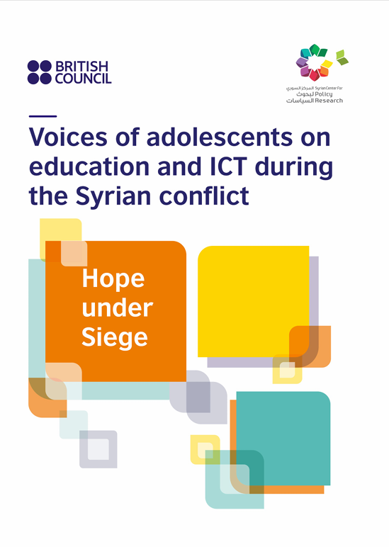
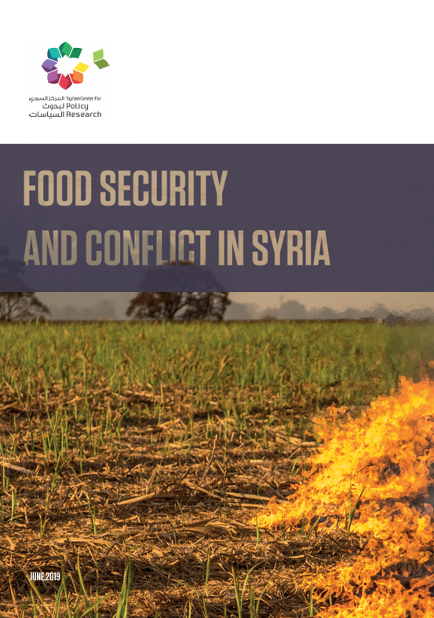
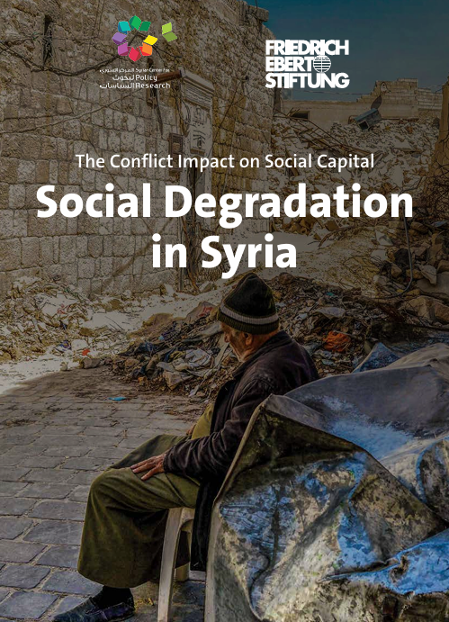

Research
A sample of my joint research projects with different think tanks and research centres

Hope Under Siege
Voices of Adolescents on Education and ICT during the Syrian Conflict.
The “Hope under Siege” research aims at assessing each of the challenges that adolescents in Syria encounter in relation to education and ICT. It used qualitative methods to assess the immediate, underlying and structural causes of any lack and/or violations of girls’ and boys’ rights
Full Story
Justice to Transcend Conflict 2020
Technical Report
This report provides multidimensional analyses of impacts of the armed conflict in Syria during the period 2011- 2019, examining the socioeconomic situation and institutional performance of the country during this time and provides alternatives based on expert-developed participatory approaches.
Full Story
Determinants of Forced Displacement in the Syrian Conflict
An Empirical Study
This paper seeks to analyse the correlation between institutions, social capital, economic and so76cial variables with rates of forced displacement and migration.
Full Story
Food Security & Conflict in Syria
Technical Report
The Syrian Center for Policy Research reports a 40% drop in food security in Syria from 2010 to 2018 due to ongoing conflict, with severe shortages and access issues. Urgent action is needed to halt violence, reform institutions, and rebuild the agricultural sector.
Full StorySocial Degradation in Syria
Technical Report
This report explores the impact of the armed conflict in Syria on social relations. The research develops a composite index to measure social capital based on multi-purpose field survey.
Full Story
GEM Syria Report 2009
Technical Report
This report presents analysis of a 2009 Population Survey, and GEMS surveys for Syria.
Full Story
